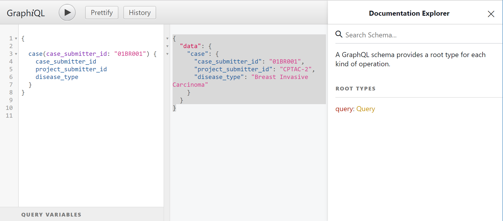

PDC GraphQL API Overview
The PDC GraphQL API allows for more efficient retrieval of data by enabling to fetch multiple, nested resources in a single request. The API is based on the data model and data dictionary described here.
The PDC GraphQL API is currently in alpha.
On this page:Getting started
The quickest way to get started with the GraphQL API is to PDC GraphQL Explorer:
Endpoint
The GraphQL API endpoint is http://pdc.esacinc.com/graphql. All requests must be HTTP POST requests with application/json encoded bodies.Authentication
PDC GraphQL is open access.Performing requests with curl
A GraphQL request is a standard HTTPS POST request, with a JSON-encoded body containing a "query" key, and optionally a "variables" key. For example, the following curl command returns the case submitter id project submitter id disease typeproperties for a queried case:
curl http://pdc.esacinc.com/graphql \
-H "Content-Type: application/json" \
-d '{"query": "{ case(case_submitter_id: \"01BR001\") \
{ case_submitter_id project_submitter_id disease_type }}"}'
{
"data": {
"case": {
"case_submitter_id": "01BR001",
"project_submitter_id": "CPTAC-2",
"disease_type": "Breast Invasive Carcinoma"
}
}
}
Schema
Click here for Swagger documentation of exposed schema (full list of fields and types) that you can explore using the PDC GraphQL Explorer.GraphQL+Python Example
Below is an example of querying PDC GraphQL API with Python. Click here for more examples.
#Get details about a single study
import requests
import json
# The URL for our API calls
url = 'https://pdc.esacinc.com/graphql'
# query to get study summary details
query = '''{
uiStudy(study_submitter_id: "S016-1") {
submitter_id_name
program_name
project_name
disease_type
primary_site
analytical_fraction
experiment_type
cases_count
num_raw
num_mzml
num_prot
num_prot_assem
num_psm
}
}'''
response = requests.post(url, json={'query': query})
if(response.ok):
#If the response was OK then print the returned JSON
jData = json.loads(response.content)
print (json.dumps(jData, indent=4, sort_keys=True))
else:
# If response code is not ok (200), print the resulting http error code with description
response.raise_for_status()
OUTPUT
{
"data": {
"uiStudy": [
{
"analytical_fraction": "Proteome",
"cases_count": 60,
"disease_type": "Colon Adenocarcinoma",
"experiment_type": "Label Free",
"num_mzml": 1425,
"num_prot": 5,
"num_prot_assem": 4,
"num_psm": 2850,
"num_raw": 1425,
"primary_site": "Colon",
"program_name": "Clinical Proteomic Tumor Analysis Consortium",
"project_name": "CPTAC-Retrospective",
"submitter_id_name": "TCGA_Colon_Cancer_Proteome"
},
{
"analytical_fraction": "Proteome",
"cases_count": 30,
"disease_type": "Rectum Adenocarcinoma",
"experiment_type": "Label Free",
"num_mzml": 1425,
"num_prot": 5,
"num_prot_assem": 4,
"num_psm": 2850,
"num_raw": 1425,
"primary_site": "Rectum",
"program_name": "Clinical Proteomic Tumor Analysis Consortium",
"project_name": "CPTAC-Retrospective",
"submitter_id_name": "TCGA_Colon_Cancer_Proteome"
}
]
}
}
Learning more about GraphQL
Further resources for learning more about GraphQL:- graphql.org/learn — The Learn section of the official GraphQL website